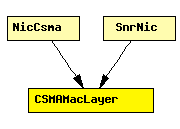

File: NetworkInterfaces/MF80211/macLayer/CSMAMacLayer.ned
C++ definition: click here
CSMA MAC protocol
This component has been taken over from Mobility Framework 1.0a5.
The following diagram shows usage relationships between modules, networks and channels. Unresolved module (and channel) types are missing from the diagram. Click here to see the full picture.
If a module type shows up more than once, that means it has been defined in more than one NED file.
| NicCsma | The CsmaNic contains a csma-like MAC layer. The SnrEval module is used as the mac needs a RadioState to be published. However as still the BasicDecider is used all messages will be delivered to the MAC and no packets get lost |
| SnrNic | This is the easiest nic to implement "real" network behaviour. It uses the CsmaMacLayer and the SnrDecider and SnrEval modules. |
| Name | Type | Description |
|---|---|---|
| debug | bool | debug switch |
| headerLength | numeric const | |
| queueLength | numeric const |
| Name | Direction | Description |
|---|---|---|
| uppergateIn | input | |
| uppergateOut | output | |
| lowergateIn | input | |
| lowergateOut | output |
simple CSMAMacLayer parameters: debug: bool, // debug switch headerLength: numeric const, queueLength: numeric const; gates: in: uppergateIn; out: uppergateOut; in: lowergateIn; out: lowergateOut; endsimple